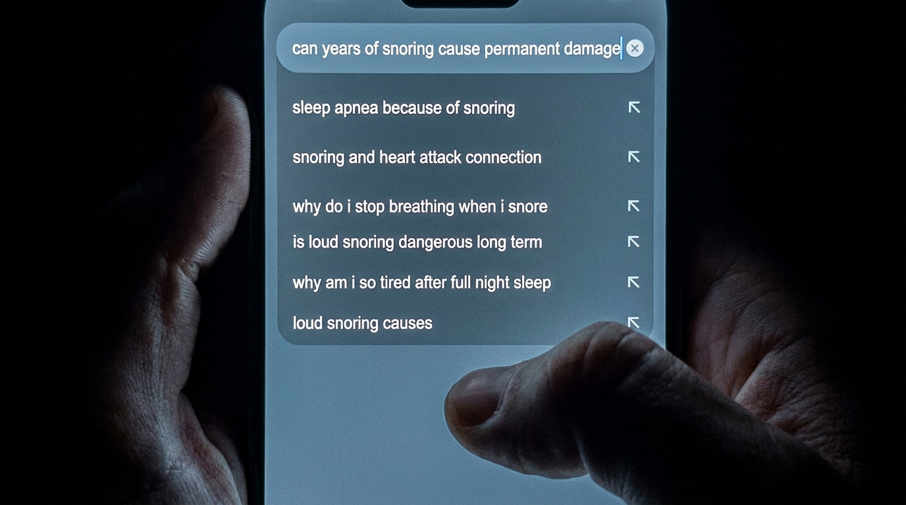
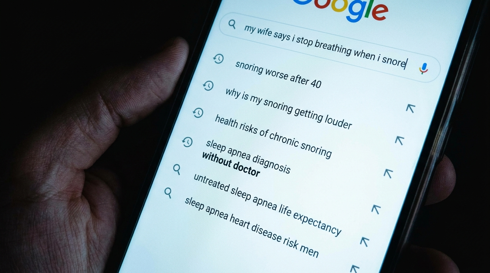
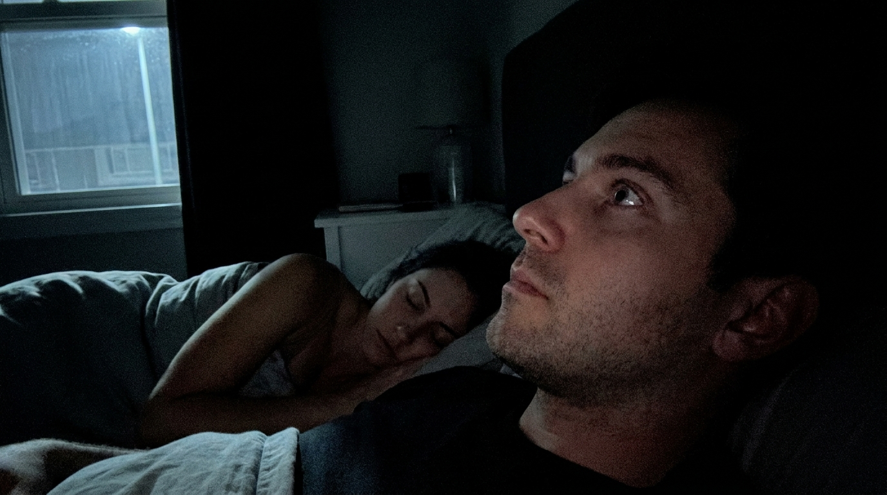
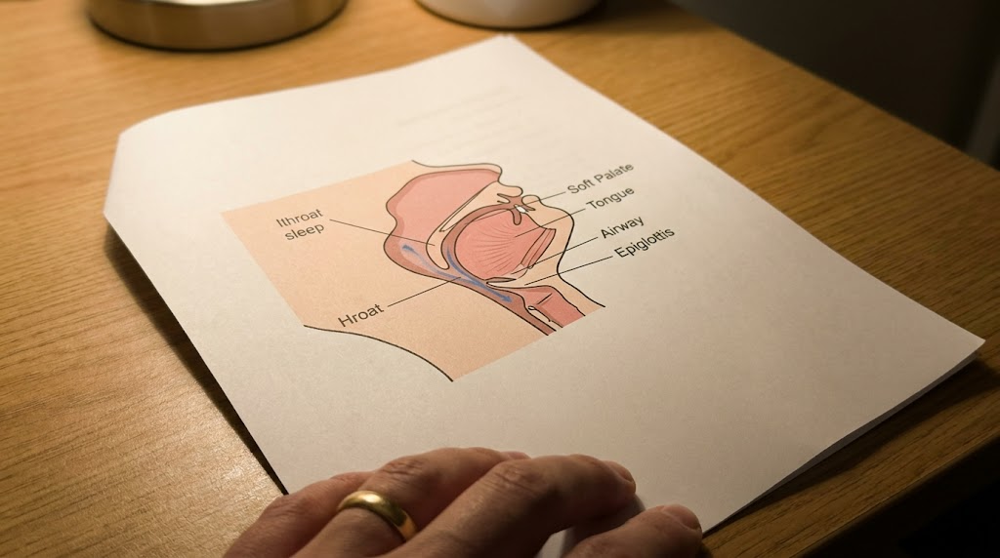
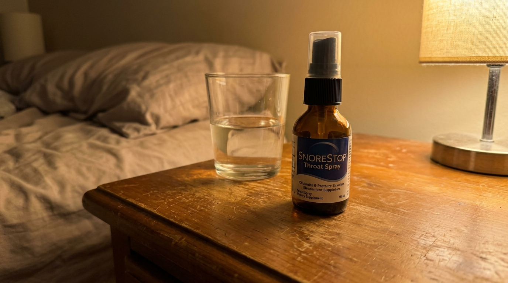
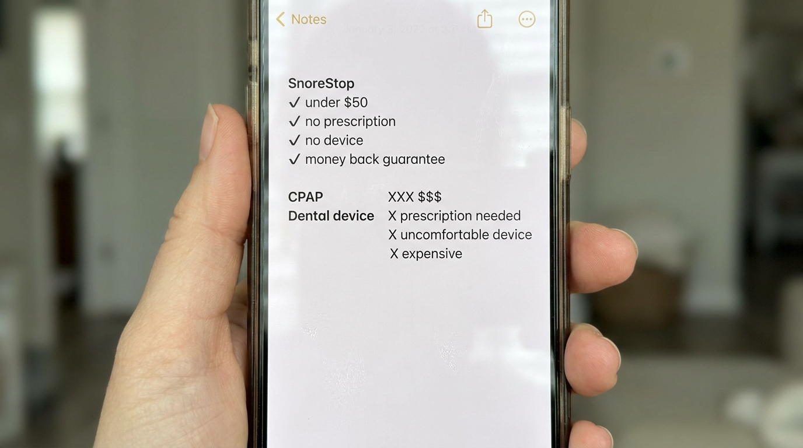
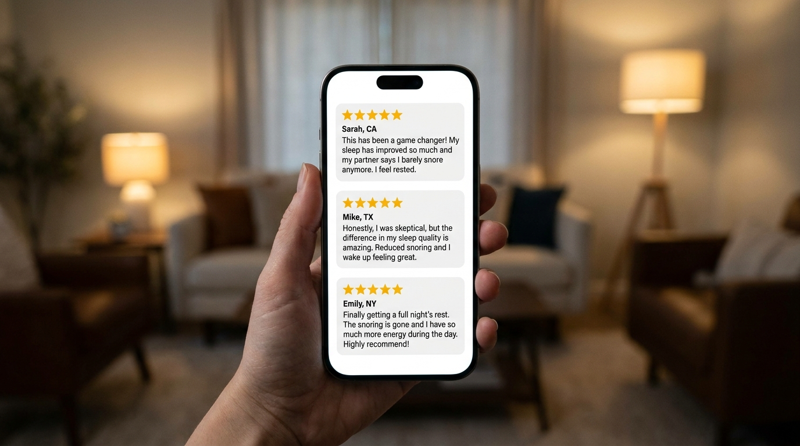
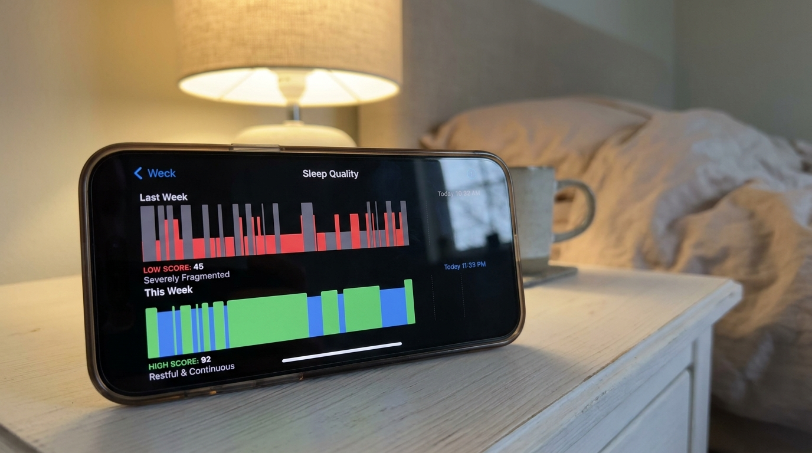

I Ignored My Snoring For Years Until A Routine Checkup Made Me Go Home And Read Things That Made Me Sh*t My Pants. (Here's What Fixed It)

I thought my snoring was harmless.
I had thought that for years, comfortably and without much examination, the way you think things that nobody has given you a reason to question yet.
Then my doctor mentioned sleep apnea at a routine checkup. Casually, the way doctors mention things that are serious but not yet emergencies. He said the word, mentioned a sleep study, mentioned CPAP possibly, and then moved on to the next item on his list like he'd just told me to drink more water.
I drove home in silence and opened Google and started reading.
Three hours later I was somewhere I had not expected to be when I woke up that morning. What I found when I kept reading is in what I wrote below. And what I eventually did about it, which turned out to be so much simpler than anything I read that night, is in there too. Read it before you make the same mistake I made of waiting years before taking any of this seriously.
It started as background noise
My snoring had been going on since my mid thirties.
My wife mentioned it early on. I bought strips. They helped a little for a while and then they didn't and we both quietly filed it under things we live with and moved on. I told myself everyone snores. I told myself it wasn't serious. I told myself that if it were serious someone would have said something by now.
Nobody said anything. So I kept not doing anything.
What I didn't understand then, what I had genuinely never considered, is that my wife had stopped saying something not because it had gotten better but because she had accepted that saying something wasn't going to change anything. That is not the same as it not being a problem. I know that now.
The snoring kept getting worse. I kept sleeping through every second of it, waking up every morning feeling more or less fine, and telling myself that feeling fine was the same as being fine.
It is not the same thing. Not even close.

The checkup
It was a routine physical. The kind you book because your wife has been telling you to book it for two years and you finally run out of ways to postpone it.
My doctor went through the usual things. Blood pressure, cholesterol, weight. Then he asked if I snored and I said yes, a little, the way I always answered that question, and he looked at me for a moment and said it sounded like it might be worth looking into sleep apnea.
He said it like it was a minor footnote. I nodded like it was a minor footnote. He moved on to something else and I sat there on the examination table thinking about nothing in particular and then drove home and didn't think about it for about forty minutes.
Then I opened Google.
I want to be honest about what happened next because I think a lot of men have that same moment — the doctor says something, you half absorb it, you go home, and then at some point later that day something makes you actually look it up — and I want them to understand that what they find is going to matter and they should not read it alone at midnight without any context.
What I found
I started with the basics.
What is sleep apnea. What causes it. Whether snoring always means sleep apnea or just sometimes. Normal questions a person asks when they are still in the comfortable phase of researching something and believe they are going to find out it is not that serious.
An hour in I was no longer in the comfortable phase.
I found out what actually happens to a body during an apnea episode. The airway closes. The oxygen level in the blood drops. The brain fires an emergency signal. The body jolts itself awake just enough to restart the breathing, not enough to fully wake up, not enough to remember it in the morning. This can happen dozens of times a night. It can happen hundreds of times a night in severe cases. Every single time it happens the body is running a small emergency response and then trying to go back to sleep and the person lying there feels completely fine in the morning because they were unconscious for all of it.
I had been doing this every night for years.
I read about what it does to a heart that runs these small emergencies repeatedly over months and years. I read about blood pressure. I read about stroke risk. I read about the kind of fatigue that builds so slowly you stop noticing it because it becomes your baseline and you forget what normal felt like.
It was past midnight. My wife was asleep. I was sitting in the kitchen in the dark reading things on my phone that I could not stop reading and could not unknow once I had read them and feeling a very specific kind of scared that I had not felt since I was much younger.
I felt fine. That was the part that kept landing. I felt completely fine and had felt fine for years and apparently that meant absolutely nothing about what was actually happening inside me every single night.
"Dozens of times a night my body was running a small emergency response while I slept through every second of it feeling completely fine. Years of this. I had no idea."
The part I've never said out loud
I didn't tell my wife what I'd read that night.
I came to bed eventually, lay there in the dark next to her, and listened to myself breathe in a way I had never listened before. Trying to catch the moment it might stop. Trying to feel something that I now understood was happening and that I had been completely unable to detect for years because you cannot feel your own airway closing when you are unconscious.
I lay there for a long time.
What I was sitting with, what I couldn't say out loud even to her, was the specific shame of a man who has been given information about his own health and is processing the fact that he had access to this information for years and had chosen not to look for it because it was more comfortable not to know.
My doctor had mentioned sleep apnea like a footnote. My wife had mentioned my snoring hundreds of times. I had built a comfortable story about background noise and harmless habits and I had lived inside that story for years while something very different was happening in the dark.
That night in bed I made a decision that I was going to actually do something about it before the end of the week.

What I did next
I went back looking for solutions the following morning with a completely different energy than I'd had the night before.
The night before I had been reading about the problem. That morning I was reading about the fix and I had a much lower tolerance for anything that wasn't going to actually work.
I looked at CPAP machines first because that's what the doctor had mentioned. I read about the sleep study process, the titration, the different mask types, the humidifiers, the cleaning routines, the travel cases, the insurance battles. I read forum posts from people who had been using CPAP for years and still struggled to get through the night with it on and people who had given up on it entirely and gone back to untreated apnea because the treatment felt worse than the condition.
I read about dental devices. The fitting process, the cost, the jaw soreness, the months of adjustment.
I read about surgery. I closed that tab quickly.
And then I found something that none of those forum posts had mentioned. Something so straightforward that I read it three times before I let myself consider it seriously. A natural throat spray. No machine, no mask, no device, no fitting, no surgery, no prescription. Two seconds before bed.
I was skeptical in the specific way you are skeptical when you have just spent twelve hours reading about a serious medical condition and someone is suggesting the answer is a spray bottle.
I kept reading. The mechanism made sense. Thirty years in pharmacies. Over 250,000 people. The guarantee made the skepticism irrelevant.
I ordered it that morning.
Why it actually works
The snoring is a throat problem.
That is the sentence that reframes everything. Not a nose problem, not a position problem, not exclusively a weight problem. The sound comes from the soft tissue at the back of the throat partially relaxing during sleep and vibrating as air moves through the restricted airway. When the restriction gets bad enough the airway doesn't just narrow. It closes. The breathing stops. The body jolts itself back. The cycle repeats.
SnoreStop throat spray works directly on that tissue.
The natural formula coats the soft palate and throat, temporarily firming the tissue, reducing the vibration that creates the sound, helping keep the airway open enough that the stopping doesn't happen. It addresses the source directly rather than redirecting the problem somewhere else.
Thirty years in pharmacies. That is not a claim, that is a history. SnoreStop has been available since 1995 and has been used by over 250,000 people, not because it is new or clever, but because the mechanism is real and it works on it consistently enough that people keep coming back to it.
Why it actually works when everything else doesn't
The reason most snoring products fail is that they address everything except the actual source of the problem.
Nasal strips open the nasal passage. Chin straps reposition the jaw. Positional pillows keep you off your back. White noise machines make the sound more bearable for the person lying next to it. All of these work around the problem rather than at it.
The problem is the soft tissue at the back of the throat. When that tissue relaxes enough during sleep to partially block the airway it vibrates as air tries to move through. That vibration is the snoring. When the blockage gets severe enough the airway closes completely. That is the apnea.
SnoreStop works directly on that tissue. The natural formula coats the soft palate and throat, temporarily firming the tissue, reducing the vibration, keeping the airway open. It does not redirect the problem. It removes the conditions that create it.
Two seconds before bed. That is the entire process.


| Option | Cost | What it involves |
|---|---|---|
| Sleep study + CPAP | $1,000–$3,500 | Machine, mask, hose, nightly setup |
| Dental MAD device | $1,500–$4,500 | Custom fitting, multiple appointments |
| Surgical options | $4,000–$6,000+ | Recovery time, risk, no guarantee |
| SnoreStop throat spray | Under $50 | Two seconds before bed |

"My husband was diagnosed with mild sleep apnea and refused to use the CPAP. Found this after weeks of looking for an alternative. Four months in and he sleeps through the night and so do I. His doctor was surprised at his follow up."
"I did the same midnight Google spiral after my checkup and scared myself badly. Tried this before going the CPAP route. Two weeks in and my wife says the snoring is basically gone. Wish I'd found it before the sleep study."
"My husband snored for fifteen years and we both just accepted it. His doctor mentioned sleep apnea and suddenly we were both taking it seriously. This was the first thing we tried. It was also the last thing we tried."

Six months later
My wife sleeps through the night now.
That is the sentence I did not know I was working toward when I sat in that kitchen at midnight reading things that scared me. I was working toward fixing something in me, something medical, something I had finally understood was serious. What I did not anticipate was that fixing it would also give her back something she had lost so gradually she had stopped noticing it was gone.
She told me a few weeks in that she had forgotten what it felt like to wake up without already being tired. That she had been so used to the broken nights that fully rested had stopped feeling like something she was allowed to expect.
Six months later she expects it. Every morning.
As for me, I still think about that night in the kitchen sometimes. The things I read. The specific quality of that scared feeling sitting alone in the dark with a phone that kept showing me things I had not known and could not unknow. I think about the years before that night when I had felt completely fine and had built an entire comfortable story on top of that feeling.
I am glad my doctor said something. I am glad I finally looked it up. I am angry it took a midnight spiral to get me there and not a single one of the hundreds of mornings before it when my wife had mentioned my snoring and I had said yeah I know and done nothing.

The part that made me pull the trigger
When I found SnoreStop I almost kept looking because after everything I had read about sleep apnea the simplicity of it felt suspicious.
What made me actually buy it was the guarantee.
Thirty days. Full refund. No questions asked, no justification required, no explanation needed. You try it for thirty days and if the snoring doesn't improve you get every dollar back completely.
After everything I had spent the previous night reading I was not in a position to argue with a guarantee like that. There were only two outcomes available. Either it works and the nightly emergency responses stop and my wife gets her sleep back and I stop building quiet damage in the dark. Or it doesn't work and it costs nothing.
There is no version of that math that goes wrong. I ordered it before I could talk myself out of it.
🟢 The SnoreStop 30-Day Guarantee
Try it for a full 30 days. If the snoring doesn't improve contact them for a complete refund. No questions. No justification required. No process to navigate.
"Either the snoring stops, or your money comes back. Those are the only two outcomes. Mathematically impossible to lose."
Why I'm writing this
I'm writing this because of that night in the kitchen.
Because of what it felt like to sit there at midnight reading things I should have looked up years earlier and understanding for the first time what feeling fine actually meant and did not mean. Because of the years I spent building a comfortable story on top of a problem I had decided wasn't serious enough to examine.
If your doctor has mentioned sleep apnea and you nodded and moved on, go home and actually look it up. Not to scare yourself, though it might. To understand what is actually happening and make an informed decision about what to do about it instead of the uninformed decision I made for years which was to do nothing.
The fix exists. It is simple, it is affordable, it has been around for thirty years, and there is a thirty day guarantee that means trying it costs you nothing if it doesn't work.
Don't wait for the midnight spiral. Go read what I wrote below and then do something about it tonight.